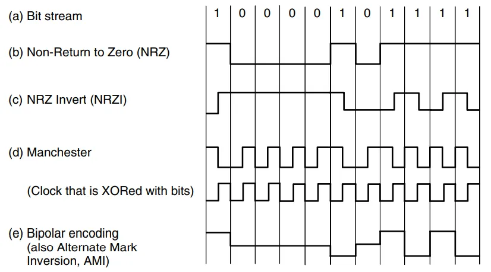

计算机网络¶
约 1344 个字 1 张图片 预计阅读时间 4 分钟
课程信息
授课教师：董玮
参考教材： Computer Networks (by Tanenbaum, Feamster and Wetherall, 6th edition)
另外...
请支持 咸鱼暄的代码空间
物理层¶
数据传输相关¶
data rate / bit rate：单位时间内传输的信息中 bit 的数目，即 (数据量/时间)。
symbol rate / baud rate：单位时间内传输的 symbol 数目，即单位时间内可能发生的信号变化次数。
奈奎斯特定理 Nyquist's theorem
在理想（无噪声）低通（带宽有限）信道中，极限码元传输速率是 \(2 W\) Baud ，其中 \(W\) 是理想低通信道的（模拟）带宽。若用 \(V\) 表示每个码元离散电平的数目（即其可以取的离散值的个数，也即其进制数），则极限数据率为 \(2 \times W \log_2 V\) (b/s)。
例如，一条无噪声的 8 \(\text{kHz}\) 信道，每个信号包含 8 级，则最大传输速率为 \(2 \times 8\text{kHz} \times \log_2 8\) bit = \(48\) kb/s
香农定理 Shannon's theorem
在受高斯白噪声干扰的低通信道中，用 \(W\) 表示信道的（模拟）带宽，\(S\) 表示信号平均功率，\(N\) 表示高斯噪声功率，则极限数据率是 \(W \log_2{(1 + S/N)}\) (b/s)。
信噪比 Signal-to-Noise Ratio, SNR： SNR 公式
中的 \(S/N\) 就是信噪比，没有单位；但为了方便表示更大的范围，也用 \(10\lg(S/N)\) 表示信噪比，单位为分贝 dB （事实上 dB 本来就是一个比例单位）。如果看到 dB 为单位的信噪比，应换算为 S/N 再代入公式。
对于给出 \(V\) 的情况，无论是否说明无噪声都应使用 Nyquist's theorem 确定 data rate 的一个上界；对于给出 SNR 的情况，也应根据 Shannon's theorem 确定另一个上界。
数字调制¶
数据与代表它们的信号之间的转换过程称为数字调制 (digital modulation)。
1. 基带传输 Baseband Transmission¶
直接将数据转换为数字信号，数字信号是离散的。占用传输介质上的全部频率，用于有线介质（需要注意，光纤不是基带传输）。
基带传输传的就是方波。方波的频域是 Sa 函数（即 \((\sin t) / t\)），因此它需要的频率范围是无穷大的；而实际上的传输媒体提供的频率范围是有限的，因此会存在一定的失真。
Warning
这里我们讨论的其实是对比特流进行编码（在课本中这部分也称为调制）；在通带传输中我们讨论真正的调制，即将数据转换为连续的模拟信号。

-
NRZ
Non-Return to Zero 用正电压 / 有光表示 1 ，负电压 / 没有光表示 0。问题：如果是 0 和 1 交替，接收端可以在每一次变化时校准；但是如果一直是 0 或者 1 的话那过一段时间可能就数错了。即：无法传递时钟信号，双方难以同步；除非双方都带有时钟线。
-
Manchester （以太网 Ethernet 的编码方式）
用一个高和一个低表示 1 ，一个低一个高表示 0 （实际上就是与一个时钟信号做了 XOR ，如图）。解决了时钟信号的问题，即每个码元中间一定有电平跳变。问题是带宽开销增大了一倍。
-
NRZI, NRZ Invert （ USB 2.0 的编码方式）
用信号翻转表示 1 ，信号不变表示 0。没有带宽开销的增加；解决了一长串都是 1 的问题；但是如果一长串都是 0 还是不行。4B/5B mapping 解决了这个问题，保证映射结果永远不会出现连续 3 个 0 ，虽然增加了 25% 的开销，但是比 Manchester 好一些：
-
扰频/倒频 scrambling
尝试解决一长串 0 和 1 的问题。发送数据之前，用一个伪随机序列 XOR 数据，接收器用同样的序列 XOR 后得到结果。问题：不能完全保证不会出现一长串 0 或 1 ；尤其是序列较短之类的情况可能出错或被恶意用户攻击。
-
双极编码 Bipolar encoding / AMI, Alternate Mark Inversion
这种编码方式关注信号的平衡性；短时间内正电压和负电压一样多的信号称为平衡信号 balanced signal ，这样的信号均值为 0 ，即没有直流分量；由于传输介质的物理性质，没有直流分量是一个优点。这种编码方式用 +1 或者 -1 表示 1 ，每次的 1 与前一次的 1 表示法相反，保证最多只差 1 个；用 0 表示 0。
还有一种 8B/10B 编码模式。同时考虑这些问题，通过映射保证没有超过 5 个连续的 0 或 1 ，同时保持 0 和 1 数目相对均等；其额外带宽消耗也只有 25%。
一些计算
What is the minimum bandwidth needed to achieve a data rate of \(B\) bits/sec if the signal is transmitted using NRZ and Manchester encoding? Explain your answer.
解答
In NRZ, the data rate = signal rate, so the signal rate is \(B\) bps. So, the minimum bandwidth need to achieve \(B\) bits/sec data rate is \(B/2\) Hz.
In Manchester encoding, the data rate = 1/2 \(\times\) signal rate, so the signal rate is \(2B\) bps. So, the minimum bandwidth need to achieve \(B\) bits/sec data rate is \(B\) Hz.